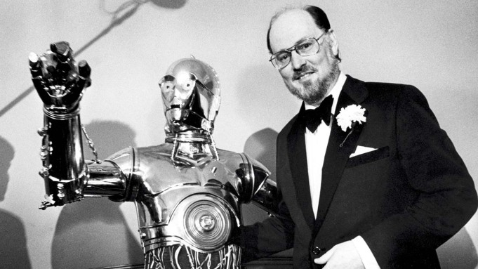

John Williams
John Towner Williams (born February 8, 1932) is an American composer, conductor, pianist and trombonist. In a career that has spanned nearly seven decades, he has composed some of the most popular, recognizable, and critically acclaimed film scores in cinematic history. Williams has won 25 Grammy Awards, seven British Academy Film Awards, five Academy Awards, and four Golden Globe Awards. With 52 Academy Award nominations, he is the second most-nominated individual, after Walt Disney. His compositions are considered the epitome of film music. In 2005, the American Film Institute selected Williams's score to 1977's Star Wars as the greatest film score of all time. The Library of Congress also entered the Star Wars soundtrack into the National Recording Registry for being "culturally, historically, or aesthetically significant".
Williams has composed music for many critically acclaimed and popular movies, including the Star Wars saga, Jaws, Close Encounters of the Third Kind, Superman, E.T. the Extra-Terrestrial, the first two Home Alone films, the Indiana Jones films, the first two Jurassic Park films, Schindler's List, and the first three Harry Potter films. Williams has also composed numerous classical concertos and other works for orchestral ensembles and solo instruments. He served as the Boston Pops' principal conductor from 1980 to 1993 and is its laureate conductor. He has been associated with director Steven Spielberg since 1974, composing music for all but five of his feature films, and George Lucas, with whom he has worked on both of his main franchises.
Conducting, Performing, and Other Classical Works
From 1980 to 1993 Williams served as the Boston Pops Orchestra's Principal Conductor, succeeding Arthur Fiedler. Williams never met Fiedler in person but spoke with him by telephone. His arrival as the Pops' new leader in the spring of 1980 allowed him to devote part of the Pops' first PBS broadcast of the season to presenting his new compositions for The Empire Strikes Back.
Williams almost ended his tenure with the Pops in 1984 when some players hissed while sight-reading a new Williams composition in rehearsal; Williams abruptly left the session and turned in his resignation. He initially cited mounting conflicts with his film composing schedule, but later admitted a perceived lack of discipline in, and respect from, the Pops' ranks, culminating in this latest instance. After entreaties by the management and personal apologies from the musicians, Williams withdrew his resignation and continued as principal conductor for nine more years In 1995 he was succeeded by Keith Lockhart, the former associate conductor of the Cincinnati Symphony Orchestra and Cincinnati Pops Orchestra.
Williams is now the Pops' Laureate Conductor, thus maintaining his affiliation with its parent, the Boston Symphony Orchestra (BSO). Williams leads the Pops on several occasions each year, particularly during their Holiday Pops season and typically for a week of concerts in May. He conducts an annual Film Night at both Boston Symphony Hall and Tanglewood, where he frequently enlists the Tanglewood Festival Chorus, the BSO's official chorus.
Legacy
John Williams is regarded as one of the most influential film composers. His work has influenced other film composers, as well as contemporary classical and popular music. The Norwegian classical composer Marcus Paus argues that Williams's "very satisfying way of embodying dissonance and avant-garde techniques within a larger tonal framework" makes him "one of the great composers of any century".
Similarly, Williams film music has clear influences from other classical and film composers, including Holst, Stravinsky, Korngold, and others. But while many have specifically referenced the similarities, these are generally attributed to the natural influence of one composer on another.
| Year | Category | Nominated Work | Result |
|---|---|---|---|
| 1972 | Best Scoring: Adaptation and Original Song Score | Fiddler on the Roof | Won |
| 1976 | Best Original Score | Jaws | Won |
| 1978 | Best Original Score | Star Wars | Won |
| 1983 | Best Original Score | E.T. the Extra-Terrestial | Won |
| 1994 | Best Original Score | Schindler's List | Won |
| Total Wins | 5 |